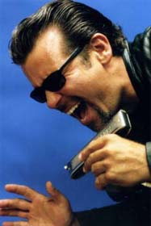
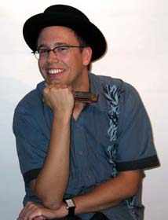
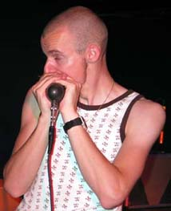
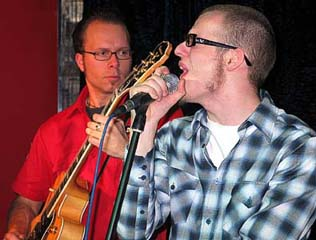

Шоу исполнителей на губной гармонике "Blues Harp Melt Down" впервые появилось в США. Простая и гениальная идея его заключается в том, что на одной сцене выступают сразу несколько мастеров-харпистов. На протяжении шоу они по-очереди демонстрируют свои таланты гармониста и солиста группы, а во втором отделении выступают вместе в формате большого отрепертированного джема. На протяжении последнего десятилетия менялись участники шоу, но кто бы не объединялся под вывеской "Blues Harp Melt Down", этому шоу всегда сопутствует невероятный успех.
С 18-го по 21-е ноября при посредничестве интернет-порталов blues.ru и norge.ru, посольства Норвегии в России, а также компании "Другая Музыка", концерты "Blues Harp Melt Down" пройдут в России! На сцену выйдут двое ведущих скандинавских исполнителей на губной гармонике, норвежцы Ричард Гъемс и Эйрик Бергене, а также известнейший гармошечник из США Митч Кэшмар (Mitch Kashmar)!
Представляем участников шоу:

"У этого парня - убойная сила двуствольного ружья: любого сразит наповал своей гармошкой и блистательным пением!" - восторженно отзывается о Митче Кэшмаре легендарный Джуниор Ватсон. Big Joe Turner, Eddie Cleanhead Vinson, Lowell Fulson, Roy Gaines, Jimmy Witherspoon, Charlie Musselwhite, Johnny Adams, John Lee Hooker, Pee Wee Crayton, Luther Tucker, Pinetop Perkins, William Clarke, Kim Wilson... вот далеко не полный перечень блюзовых VIP с кем в разное время играл Митч Кэшмар. Митч родился в 1960-м году в Санта Барбаре, штат Калифорния. Еще в школьном возрасте стал играть в составе местных коллективов. А свою собственную группу, получившую название "The Pontiax", Митч сколотил в 1980-м году. В короткий срок этот бэнд становится известным по всей Калифорнии, и Митч с друзьями принимают решение перебераться в Лос-Анжелес. Впоследствии, альбом "The Pontiax" "100 Miles To Go" приносит им общенациональную известность и гастроли по всем Штатам, Канаде, Европе. Даже в Австралии и Новой Зеландии имели возможность оценить их гремучий коктейль из блюзовых стилей Чикаго, Нового Орлеана, Луизианы, Техаса и западного побережья. Кроме этого, "The Pontiax" выступали сайдменами у несчетного количества блюзовых легенд, гастролировавших по Калифорнии.В настоящее время Митч Кэшмар активно выступает и записывается под собственным именем. На его счету выступления на крупнейших блюзовых фестивалях и успешные сольные записи.

Один из ведущих скандинавских харпистов. Блюз, кантри, соул, рок, и в акустике, и в "электричестве" одинаково подвластны его виртуозной гармонике. Ричард начал играть на губной гармонике будучи еще тинэйджером. На его собственную манеру игры оказали влияние классики жанра Sonny Boy Williamson, Little Walter, а также такие мастера как Paul Butterfield, Stevie Wonder, Mickey Raphael, Fingers Taylor и Kim Wilson. В 1998-м Ричард становится участником "The Pure Pleasure Kings", достаточно успешной группы под руководством Ронни Якобсена (Ronnie Jacobsen). Три года он шлифовал здесь свое мастерство, много гастролировал и записывался с этим коллективом. Но в 2001-м году "The Pure Pleasure Kings" распались, и Ричарду пришлось переквалифицироваться в сессионного музыканта. На новом поприще он тоже достиг немалых высот, закрепив за собой репутацию крепкого профи. Внушительный список звезд, с которыми сотрудничал Гъемс, открывает культовый гитарист из Калифорнии Kid Ramos, продолжают Big Bill Morganfield, Bill Sims, Big Joe Louis, а также норвежские идолы JT Lauritsen, Steinar Albrigtsen, Amund Maarud, Kid Andersen, Reidar Larsen... Необходимо отметить и тот факт, что Ричард Гъемс является одним из редакторов авторитетного норвежского блюзового журнала "Blues News".

Норвежец Эйрик Бергене - юный асс губной гармоники. Сейчас ему 20 лет. Он начал играть на гармонике всего три года назад, но несмотря на это, сейчас она звучит просто потрясающе! Эйрик начал с успешной футбольной карьеры, благодаря чему стал очень много ездить по стране. Но все это время он не переставал заниматься гармоникой, мечтая занять заслуженное место рядом с такими норвежскими мастерами, как Arne Rasmussen, Richard Gjems и Eirek Sandnes. Несмотря на то, что вступил в игру не так давно, он влетел в высшую лигу харпистов со скоростью ракеты. Эйрик - большой поклонник старых мастеров Little Walter, Walter Horton, James Cotton и George "Harmonica" Smith, но также он черпает вдохновение у современных гармонистов William Clarke, Kim Wilson, Mark Ford и Paul DeLay. Это разнообразие музыкальных влияний дало ему солидную базу по части правильного звука и техники, что дает мощный толчок его музыкальному будущему.

"Eirik Bergene Band" стал базовой группой шоу "Blues Harp Melt Down" этого созыва. Группа Эйрика Бергене состоит из молодых талантов, которые являются не только хорошими инструменталистами, но в первую и главную очередь - командными игроками. Имея весьма стилистически-разнообразную музыкальную подготовку, все они долго затачивали свои "топоры" в клубе "Muddy Waters" в Осло, выступая с известными норвежскими и не только блюзовыми музыкантами. Хокун Хэйе (Hakon Hoye) - гитарист старой школы в традициях Pee Wee Crayton, Johnny Guitar Watson и Bill Jennings. Он был частью норвежской блюзовой сцены на протяжении немалых лет, филигранно оттачивая удары своего "топора" в таких группах, как Tonsberg Bluesband, Ramblues, Honey Tones, Amund Maarud Band . В свои девятнадцать лет барабанщик Александр Петтерсен (Alexander Pettersen) - давно не новичок и играет уже много лет. Стал активным членом "Блюзового Сообщества Осло", когда ему было всего двенадцать. Работа барабанщиком хаус-бэнда клуба "Muddy Waters" в Осло сделала его весьма опытным музыкантом. Эксперты, которые долго наблюдали за ним, пришли к выводу, что Петтерсен действительно имеет все шансы войти в элиту лучших норвежских барабанщиков. А вдвоем с басистом Пером Тубро (Per Tobro) они образуют отличную свингующую ритм-секцию. Сам Пер - не только выдающийся исполнитель на контрабасе и электрическом басу, но еще и автор замечательных песен.Вместе они - команда энтузиастов, которая сделает убойный вечер для любой аудитории. Так что, если вы вдруг окажетесь по соседству - не стесняйтесь, приходите, и присоединяйтесь к празднику!!!
{kind=link}
{kind=link}
{kind=link}
{kind=link}